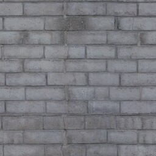
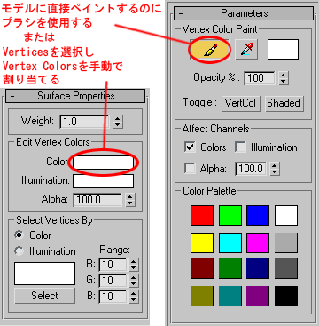
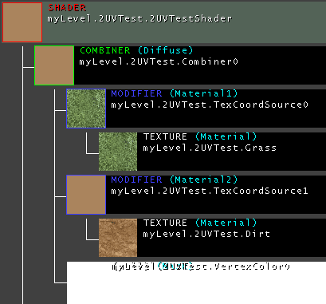
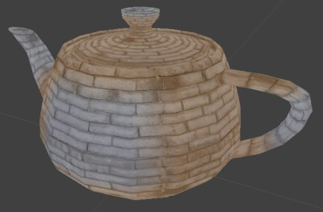
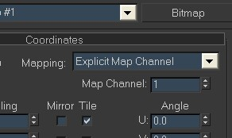
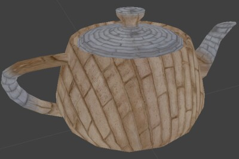

UDN
Search public documentation:
VertexBlendingTutorialJP
English Translation
中国翻译
한국어
Interested in the Unreal Engine?
Visit the Unreal Technology site.
Looking for jobs and company info?
Check out the Epic games site.
Questions about support via UDN?
Contact the UDN Staff
中国翻译
한국어
Interested in the Unreal Engine?
Visit the Unreal Technology site.
Looking for jobs and company info?
Check out the Epic games site.
Questions about support via UDN?
Contact the UDN Staff
Vertex Blending (頂点ブレンド) チュートリアル
ドキュメントの概要: 静的メッシュでの Vertex Blending (頂点ブレンド) の使用方法と、Unreal Ed へのインポート方法を解説したチュートリアル。 ドキュメントの変更ログ: 前回 Jason Lentz (DemiurgeStudios?) が更新し、補足としてマテリアルブラウザのステップと補足サンプルダウンロードを追加。原著者 Jesse Taylor (Structure Studios).Vertex Blending (頂点ブレンド) とは
簡単に言うと、頂点ブレンドを使用すると、頂点描画という手法で所定の頂点に沿ってメッシュ上の 1 つのマテリアルを別のマテリアルにブレンドしたり、何も無い「無」にブレンドすることができます。その単純さと柔軟性ゆえ、これによるメリットは大変広範囲にわたります。より具体的に言うと、複雑なスキンメッシュなしで自然なモデルを作成することができます。さらに、同じマテリアルを別のモデルに再利用したり、メッシュ上のマテリアルと簡単にスワップすることができます。プロセス
すべてはモデルの準備からはじまります。詳しくは説明しませんがこのチュートリアルでは、静的メッシュをエクスポートするプロセスで 3D Studio Max を参照します。さらに、このチュートリアルでは Vertex Blending (頂点ブレンド) の基本的な3つの手法を説明します。- 同一の UV マッピングで 1 つのマテリアルから別のマテリアルへブレンドする。
- 1 つのマテリアルから無(何も無し)へブレンドする。
- 2 つの異なる UV マッピング座標 (2 つの UV チャンネル) を使って 1 つのマテリアルから別のマテリアルへブレンドする。
同一の UV マッピングでマテリアルをブレンドする
このオプションでは、以下のように同一の UV 座標で 1 つのマテリアルからもう 1 つのマテリアルへブレンドすることができます。 使用した 2 つのテクスチャです。
使用した 2 つのテクスチャです。

 イメージから分かるように、同じマッピング座標を維持しながら、褐色のレンガがグレーのレンガにブレンドされます。この手法を使ったほんの一例を挙げると、金属に錆びを付加する、焼け焦げた木、岩の上の泥の経路、苔に覆われた樹木、生地のしわ、などがあります。
以下のような 3D Max のテクスチャ メッシュから始めます。
イメージから分かるように、同じマッピング座標を維持しながら、褐色のレンガがグレーのレンガにブレンドされます。この手法を使ったほんの一例を挙げると、金属に錆びを付加する、焼け焦げた木、岩の上の泥の経路、苔に覆われた樹木、生地のしわ、などがあります。
以下のような 3D Max のテクスチャ メッシュから始めます。
 頂点に色を適用する方法は 2 通りあります。
頂点に色を適用する方法は 2 通りあります。 - Editable Mesh (編集可能なメッシュ) である間に各頂点を選択して、「サーフェスプロパティ」の “Edit Vertex Colors” (頂点色の編集)で頂点色をマニュアルで割り当てるか、
- あるいは、Modifier List (モディファイヤ リスト) の Edit Mesh (編集メッシュ) セクションの中の VertexPaint モディファイヤを使用することができます。モデルの右クリックからペイントブラシを選択して、頂点を描画することができます (どの頂点を描画しているか確認するには、”VertCol”トグルをクリックします)。

どちらの手法でも 3DS Max で最終的な結果は表示されないことに注意してください。結果の効果を見るにはモデルを Unreal にインポートする必要があります。頂点の着色には白と黒だけを使うのがベストです。デフォルトの Vertex Colors (頂点色) では、互いの色を自動的にブレンドするので、通常マニュアルで頂点色をブレンドする必要はありません。 いったんメッシュを思うように描いてしまえば、エクスポートの準備は完了です。エクスポートする前に実際にモデルがどう見えるかプレビューしたい場合は、3D Max のブレンド マテリアルと Mask パラメータ の頂点色マテリアルを使って、レンダリングする必要があります。エクスポート前に実際のモデルをプレビューしないのであれば、頂点色をチェックしてメッシュをエクスポートします。 エディタでは、以下のテクスチャで構成されたシェーダーを作成する必要があります (以下のマテリアル ツリーでも表示):- コンバイナ (拡散)
- TexCoordSource モディファイヤ (Material1)
- テクスチャ (最初にインポートした基本テクスチャ)
- TexCoordSource モディファイヤ (Material2)
- テクスチャ (2 番目にインポートした基本テクスチャ)
- 頂点色
- TexCoordSource モディファイヤ (Material1)

出来上がったシェーダーには全部で 7 つのマテリアルが必要です。以下はそれぞれの作成方法の説明で、作成しなければならない順に記しています。 基本テクスチャと StaticMesh をインポート後、テクスチャ ブラウザを開き新規のマテリアルを作成します。[Material Class](マテリアルクラス)プルダウンメニューで、*頂点色*を選択して[パッケージ]、[グループ]、[名前]の各情報を入力します。 [New](新規) ボタンをクリックするとこのマテリアルの作成は終了です。この新規マテリアルは、自分が属するサブセクションでメッシュの頂点色を利用するときは、その新規マテリアルを使用することをすべてのマテリアルにそのまま通知します。
次に作成しなければならないマテリアルは TexCoordSource マテリアルです。別の新規マテリアルを作成しますが、今度は [Material Class](マテリアルクラス) のプルダウンメニューから TexCoordSourceを選択します。これを 2 つ作成し (1 つは基本テクスチャ用で、1 つはブレンド テクスチャ用です)、SourceChannel マテリアルフィールドで、対応するテクスチャを割り当てます。
ここで、プルダウンメニューから[Combiner(コンバイナ)] を選択し、*コンバイナ* マテリアルを作成する必要があります。Material1 に基本テクスチャから TexCoordSource マテリアルを配置します。Material2 にはブレンドテクスチャから TexCoordSource マテリアルを配置します。Mask には最初に作成した VertexColor を配置します。また CombineOperation が CO_AlphaBlend_With_Mask*、および AlphaOperation が *AO_Use_Mask であることを確認します。
最後に、[Material Class](マテリアルクラス) のプルダウンメニューからオプション [シェーダー] を選択し、これらすべてのマテリアルを利用するシェーダーを作成します。拡散 チャンネルで作成したばかりのコンバイナ マテリアルを割り当てればほとんど完成です。
これでシェーダーをご自分の静的メッシュに適用すると、結果が表示されます。
[New](新規) ボタンをクリックするとこのマテリアルの作成は終了です。この新規マテリアルは、自分が属するサブセクションでメッシュの頂点色を利用するときは、その新規マテリアルを使用することをすべてのマテリアルにそのまま通知します。
次に作成しなければならないマテリアルは TexCoordSource マテリアルです。別の新規マテリアルを作成しますが、今度は [Material Class](マテリアルクラス) のプルダウンメニューから TexCoordSourceを選択します。これを 2 つ作成し (1 つは基本テクスチャ用で、1 つはブレンド テクスチャ用です)、SourceChannel マテリアルフィールドで、対応するテクスチャを割り当てます。
ここで、プルダウンメニューから[Combiner(コンバイナ)] を選択し、*コンバイナ* マテリアルを作成する必要があります。Material1 に基本テクスチャから TexCoordSource マテリアルを配置します。Material2 にはブレンドテクスチャから TexCoordSource マテリアルを配置します。Mask には最初に作成した VertexColor を配置します。また CombineOperation が CO_AlphaBlend_With_Mask*、および AlphaOperation が *AO_Use_Mask であることを確認します。
最後に、[Material Class](マテリアルクラス) のプルダウンメニューからオプション [シェーダー] を選択し、これらすべてのマテリアルを利用するシェーダーを作成します。拡散 チャンネルで作成したばかりのコンバイナ マテリアルを割り当てればほとんど完成です。
これでシェーダーをご自分の静的メッシュに適用すると、結果が表示されます。

1つのマテリアルから無(何も無し)へブレンドする
次のようなものを作成するのは... ...実に簡単です。頂点描画と同じ手法で、新しいシェーダーを設定するだけです。
Diffuse(拡散) のエントリには、ご自分のテクスチャを使用します。Opacity(半透明) のエントリには、ご自分の VertexColor マテリアルを使用します。ここで、このシェーダーを静的メッシュに適用します。
この使用例としては、滝のメッシュをその上下の水にブレンドしたり、様々なエリアで泥のパッチをあてるなどが考えられます。
...実に簡単です。頂点描画と同じ手法で、新しいシェーダーを設定するだけです。
Diffuse(拡散) のエントリには、ご自分のテクスチャを使用します。Opacity(半透明) のエントリには、ご自分の VertexColor マテリアルを使用します。ここで、このシェーダーを静的メッシュに適用します。
この使用例としては、滝のメッシュをその上下の水にブレンドしたり、様々なエリアで泥のパッチをあてるなどが考えられます。
2 つの異なる UV チャンネルでマテリアルをブレンドする
これは補足の UVW マップをスタックに追加し、3D Max に Map Channel(マップチャンネル) 2 を使用することを通知する以外は、基本的には 3D Max の場合と同じように扱います。ビューポイントでは 1 度に 1 つ以上のチャンネルは見られないので、2つ目のマテリアルを適用し、マテリアルエディタでその Map Channel(マップチャンネル)を 2 に適用します。
2 番目のチャンネルが思うようにマップできれば、エクスポートの準備は完了です。 UnrealED の中で新規のマテリアルを作成し、[MaterialClass](マテリアルクラス) のドロップリストから [TexCoordSource] を選択します。[SourceChannel] エントリに 1 を入力します。[Material (マテリアル)] エントリには、ブレンドするテクスチャを配置します。この TexCoordSource マテリアルは指定したマップ チャンネルにテクスチャを適用することを言っているだけです。何らかの原因でテクスチャ ブラウザでは、 TexCoordSource マテリアルは、 0 以外のすべてのチャンネルで、フラットで平均的な色をのみをテクスチャに表示します。 それでは、新しいコンバイナを作成しましょう。Material1 エントリに基本テクスチャを配置します。Material2 エントリには TexCoordSource マテリアルを配置します。そして Mask エントリには VertexColor マテリアルを配置します。次にシェーダーを作成し、そのコンバイナを Diffuse (拡散) チャンネルに配置することでメッシュ上の頂点色を利用するコンバイナを使用することで起こり得る予期せぬ問題を予防します。 それができたら、ご使用の静的メッシュにこのシェーダーを適用します。これで 2 つの異なるマッピング座標を使って適用したマテリアルが両方とも表示されるはずです。